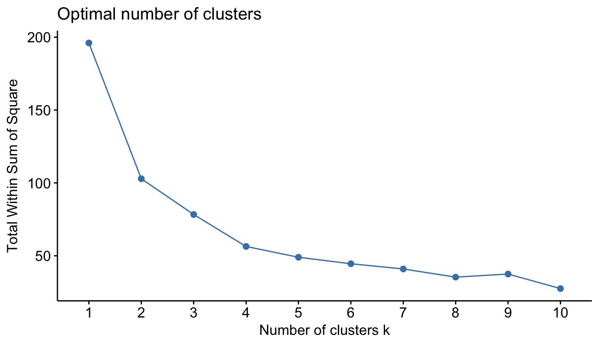
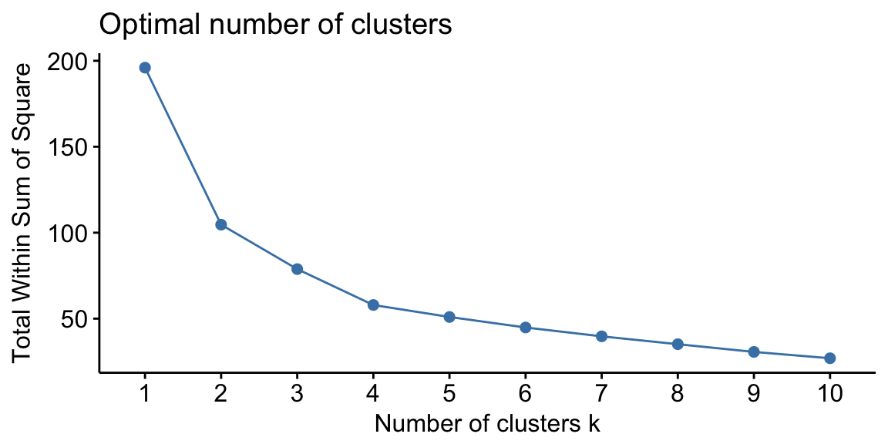

Introduction
Unsupervised learning includes a set of statistical tools to better understand n observations that contain a set of features (\(X_1, X_2, \dots, X_p\)) but do not contain a response variable (Y). Unsupervised learning is often performed as part of an exploratory data analysis. However, the exercise tends to be more subjective, and there is no simple goal for the analysis, such as prediction of a response. Furthermore, it can be hard to assess the quality of results obtained from unsupervised learning methods. The reason for this is simple. If we fit a predictive model using a supervised learning technique (i.e. linear regression), then it is possible to check our work by seeing how well our model predicts the response Y on observations not used in fitting the model. However, in unsupervised learning, there is no way to check our work because we don’t know the true answer—the problem is unsupervised.
However, the importance of unsupervised learning should not be overlooked and techniques for unsupervised learning are of growing importance in a number of fields:
- A cancer researcher might assay gene expression levels in 100 patients with breast cancer. He or she might then look for subgroups among the breast cancer samples, or among the genes, in order to obtain a better understanding of the disease.
- An online shopping site might try to identify groups of shoppers with similar browsing and purchase histories, as well as items that are of particular interest to the shoppers within each group. Then an individual shopper can be preferentially shown the items in which he or she is particularly likely to be interested, based on the purchase histories of similar shoppers.
- A search engine might choose what search results to display to a particular individual based on the click histories of other individuals with similar search patterns.
These statistical learning tasks, and many more, can be performed via unsupervised learning techniques. This tutorial will cover three common unsupervised learning techniques:
- Principal Components Analysis
- K-means Cluster Analysis
- Hierarchical Cluster Analysis
For this tutorial I have pre-loaded the following packages for you:
library(tidyverse) # data manipulation
library(cluster) # clustering algorithms
library(factoextra) # clustering algorithms & visualizationData Preparation
To perform these unsupervised techniques in R, generally, the data should be prepared as follows:
- Rows are observations (individuals) and columns are variables
- Any missing value in the data must be removed or estimated.
- The data must be standardized (i.e., scaled) to make variables comparable. Recall that, standardization consists of transforming the variables such that they have mean zero and standard deviation one.1
Here, we’ll use the built-in R data set USArrests, which contains statistics in arrests per 100,000 residents for assault, murder, and rape in each of the 50 US states in 1973. It includes also the percent of the population living in urban areas. Go ahead and get a feel for the data.
USArrests# summary statistics
summary(USArrests)# visual relationships and correlations
library(GGally)
ggpairs(USArrests)# how many missing values are in the data
sum(is.na(USArrests))To prepare our data for these techniques, let’s make sure our data complies with the 3 requirements mentioned above. Our data is already set up in the proper tidy fashion where each row is an individual observation and each column is an individual variable. As you saw above, there are no missing values in the data. However, there were, you could remove them with na.omit:
df <- USArrests
df <- na.omit(df)As we don’t want our unsupervised techniques to depend on an arbitrary variable unit, we start by scaling/standardizing the data using the R function scale:
df <- scale(df)
head(df)
## Murder Assault UrbanPop Rape
## Alabama 1.24256408 0.7828393 -0.5209066 -0.003416473
## Alaska 0.50786248 1.1068225 -1.2117642 2.484202941
## Arizona 0.07163341 1.4788032 0.9989801 1.042878388
## Arkansas 0.23234938 0.2308680 -1.0735927 -0.184916602
## California 0.27826823 1.2628144 1.7589234 2.067820292
## Colorado 0.02571456 0.3988593 0.8608085 1.864967207df <- USArrests
df <- scale(df)df# What is the mean value for our four variables?
summary(df)# How many standard deviations is Ohio away from the average murder rate?
df["Ohio", ]Principal Components Analysis
Principal components analysis (PCA) reduces the dimensionality of the data, allowing most of the variability to be explained using fewer variables than the original data set. For a large data set with \(p\) variables, we could examine pairwise plots of each variable against every other variable, but even for moderate \(p\), the number of these plots becomes excessive and not useful. For example, when \(p = 10\) there are \(p(p-1)/2 = 45\) scatterplots that could be analyzed! Clearly, a better method is required to visualize the n observations when p is large. In particular, we would like to find a low-dimensional representation of the data that captures as much of the information as possible. For instance, if we can obtain a two-dimensional representation of the data that captures most of the information, then we can plot the observations in this low-dimensional space.
PCA provides a tool to do just this. It finds a low-dimensional representation of a data set that contains as much of the variation as possible. The idea is that each of the n observations lives in p-dimensional space, but not all of these dimensions are equally interesting. PCA seeks a small number of dimensions that are as interesting as possible, where the concept of interesting is measured by the amount that the observations vary along each dimension. Each of the dimensions found by PCA is a linear combination of the p features and we can take these linear combinations of the measurements and reduce the number of plots necessary for visual analysis while retaining most of the information present in the data.

Technical Knowledge
We now explain the manner in which these dimensions, or principal components, are found.
The first principal component of a data set \(X_1\), \(X_2\), …, \(X_p\) is the linear combination of the features
\[Z_{1} = \phi_{11}X_{1} + \phi_{21}X_{2} + ... + \phi_{p1}X_{p} \tag{1}\]
that has the largest variance and where \(\phi_1\) is the first principal component loading vector, with elements \(\phi_{12}, \phi_{22},\dots,\phi_{p2}\). The \(\phi\) are normalized, which means that \(\sum_{j=1}^{p}{\phi_{j1}^{2}} = 1\). After the first principal component \(Z_1\) of the features has been determined, we can find the second principal component \(Z_2\). The second principal component is the linear combination of \(X_1,\dots , X_p\) that has maximal variance out of all linear combinations that are uncorrelated with \(Z_1\). The second principal component scores \(z_{12}, z_{22}, \dots, z_{n2}\) take the form
\[Z_{2} = \phi_{12}X_{1} + \phi_{22}X_{2} + ... + \phi_{p2}X_{p} \tag{2}\]
This proceeds until all principal components are computed. The elements \(\phi_{11}, ..., \phi_{p1}\) in Eq. 1 are the loadings of the first principal component. To calculate these loadings, we must find the \(\phi\) vector that maximizes the variance. It can be shown using techniques from linear algebra that the eigenvector corresponding to the largest eigenvalue of the covariance matrix is the set of loadings that explains the greatest proportion of the variability.
Performing PCA in R
R has several built-in functions (along with numerous add-on packages) that simplifies performing PCA. One of these built-in functions is prcomp. With prcomp we can perform PCA calculations quickly. The output from prcomp contains a number of useful quantities that we’ll cover shortly.
pca_result <- prcomp(df, scale = FALSE)
names(pca_result)
## [1] "sdev" "rotation" "center" "scale" "x"By default, the prcomp function centers the variables to have mean zero. By using the argument scale = TRUE, we scale the variables to have standard deviation one. Go ahead and execute prcomp(USArrests, scale = TRUE) and compare the output to prcomp(df, scale = FALSE). Notice that they are the same outputs. Thus, this just means that we can apply the prcomp function to unscaled data and it will scale our data for us.
# prcomp by scaling original data
prcomp(USArrests, scale = TRUE)
# prcomp using pre-scaled data
prcomp(df, scale = FALSE)The center and scale components of our prcomp output correspond to the means and standard deviations of the variables that were used for scaling prior to implementing PCA. Thus, if we use prcomp on unscaled data it shows us that the average murder rate per 100,000 population across all 50 states is 7.788 and the standard deviation is 4.36.
pca_result <- prcomp(USArrests, scale = TRUE)
# means
pca_result$center
## Murder Assault UrbanPop Rape
## 7.788 170.760 65.540 21.232
# standard deviations
pca_result$scale
## Murder Assault UrbanPop Rape
## 4.355510 83.337661 14.474763 9.366385The rotation matrix provides the principal component loadings. First, we see that there are four distinct principal components for our data. This is to be expected because you can have the same number of components as you have variables. However, shortly I’ll show you how to understand how much each component explains our data.
As for the principal component loadings - remember, the loadings represent \(\phi_{12}, \phi_{22},\dots,\phi_{p2}\) in equation 1 above. Thus, these loadings represent coefficients in which it illustrates each variables influence on the principal component. By default, loadings (aka eigenvectors) in R point in the negative direction. For this example, we’d prefer them to point in the positive direction because it leads to more logical insights. To use the positive-pointing vector, we multiply the default loadings by -1.
# convert loadings to positive
pca_result$rotation <- -pca_result$rotationFrom the results below we can infer the the first principal component (PC1) roughly corresponds to an overall rate of serious crimes since Murder, Assault, and Rape have the largest values. The second component (PC2) is affected by UrbanPop more than the other three variables, so it roughly corresponds to the level of urbanization of the state, with some opposite, smaller influence by murder rate.
pca_result$rotation
## PC1 PC2 PC3 PC4
## Murder 0.5358995 -0.4181809 0.3412327 -0.64922780
## Assault 0.5831836 -0.1879856 0.2681484 0.74340748
## UrbanPop 0.2781909 0.8728062 0.3780158 -0.13387773
## Rape 0.5434321 0.1673186 -0.8177779 -0.08902432We can visualize these influences (aka contributions) that variables have on the principal components with fviz_contrib. Here we use choice = "var" to plot the variable contributions (% of total) to the principal components and axes = 1 to plot the contributions for PC1. Changing axes = 2 will plot the contributions for PC2.
fviz_contrib(pca_result, choice = "var", axes = 1)pca_result <- prcomp(USArrests, scale = TRUE)
pca_result$rotation <- -pca_result$rotation# Which variable has the largest impact on principal component 3?
pca_result$rotation[, "PC3"]
fviz_contrib(pca_result, choice = "var", axes = 3)# Which variable has the largest impact on principal component 4?
pca_result$rotation[, "PC4"]
fviz_contrib(pca_result, choice = "var", axes = 4)We can also obtain the principal components scores from our results as these are stored in the x list item of our results. However, we also want to make a sign adjustment to our scores to point them in the positive direction.
pca_result$x <- -pca_result$x
head(pca_result$x)
## PC1 PC2 PC3 PC4
## Alabama 0.9756604 -1.1220012 0.43980366 -0.154696581
## Alaska 1.9305379 -1.0624269 -2.01950027 0.434175454
## Arizona 1.7454429 0.7384595 -0.05423025 0.826264240
## Arkansas -0.1399989 -1.1085423 -0.11342217 0.180973554
## California 2.4986128 1.5274267 -0.59254100 0.338559240
## Colorado 1.4993407 0.9776297 -1.08400162 -0.001450164The principal components scores simply places a standardized score for each observation for each principal component. Thus, above we see that Alabama has a score of 0.976 for PC1. This just states that based on Alabama’s values for Murder, Assault, Rape, and UrbanPop, Alabama is about 1 standard deviation above the average value for PC1 across all states. Since PC1 appears to represent serious crimes it appears that Alabama has about 1 standard deviation more than the average amount of serious crimes across all 50 states.
We can also visualize the contribution of each state on a particular PC with fviz_contrib by changing choice = "ind". This basically takes the absoluate values of the scores and plots the percent of total scores for each state. So this doesn’t show you if the state had a positive or negative influence on the PC but just shows if the state’s score is of large magnitude (i.e. Florida, North Dakota, Nevada) or of small magnitude (i.e. Delaware, Oregon, Virginia).
fviz_contrib(pca_result, choice = "ind", axes = 1)pca_result <- prcomp(USArrests, scale = TRUE)
pca_result$x <- -pca_result$x# Get scores for Ohio
pca_result$x["Ohio",]Selecting the Number of Principal Components
So far we have computed principal component attributes and gained a little understanding of what the results initially tell us. However, a primary goal is to use PCA for data reduction. In essence, we want to come out of PCA with less components than variables and with these components telling us about the majority of the variation in our data. But how do we decide how many principal components to keep?
The proportion of variance explained (PVE) provides us a technical way to identify the optimal number of principal components to keep. Mathematically, the PVE for the mth principal component is calculated using the equation:
\[PVE = \frac{{\sum_{i=1}^{n}(\sum_{j=1}^{p}{\phi_{jm}x_{ij}})^{2}}}{\sum_{j=1}^{p}\sum_{i=1}^{n}{x_{ij}^{2}}} \tag{3}\]
It can be shown that the PVE of the mth principal component can be more simply calculated by taking the mth eigenvalue and dividing it by the number of principal components, \(p\). We can create a vector of PVEs for each principal component:
# compute the variance of each principal component
VE <- pca_result$sdev^2
# compuate the PVE of each principal component
PVE <- VE / sum(VE)
round(PVE, 2)
## [1] 0.62 0.25 0.09 0.04The first principal component in our example therefore explains 62% of the variability, and the second principal component explains 25%. Together, the first two principal components explain 87% of the variability.
We can visualize this using what’s called a scree plot.
fviz_screeplot(pca_result)So how many principal components should we use? The frank answer is that there is no robust method for determining how many components to use. As the number of observations, the number of variables, and the application vary, a different level of accuracy and variable reduction are desirable. However, because the point of PCA is to significantly reduce the number of variables, we want to use the smallest number of principal components possible to explain most of the variability.
The most common technique for determining how many principal components to keep is eyeballing the scree plot and look for the “elbow point”, where the PVE significantly drops off.
In our example, because we only have 4 variables to begin with, reduction to 2 variables while still explaining 87% of the variability is a good improvement. Thus, in this case I would say two components is sufficient.
Putting it All Together
So what does all this mean? Well, 87% of the variation in our data can be captured in two components:
- PC1 (x-axis) is mainly driven Rape, Assault, and Murder suggesting captures serious crimes
- PC2 (y-axis) is mainly driven by UrbanPop suggesting it captures urbanization
This is illustrated in the following graphic. Furthermore, we use alpha.var = "contrib" to illustrate the influence each variable has on the principal components and we see that Rape has much less influence than the other three variables.
fviz_pca_var(pca_result, alpha.var = "contrib")Furthermore, we can see where each state aligns along these components. We see that states such as California, Florida, and Nevada have high rates of serious crimes, while states such as North Dakota and Vermont have far lower rates. The second component (y-axis) is roughly explained as urbanization, which implies that states such as Hawaii and California are highly urbanized, while Mississippi and the Carolinas are far less so. A state close to the origin, such as Indiana or Virginia, is close to average in both categories.
fviz_pca_ind(pca_result)
Summary
So there you have it. We’ve used PCA to reduce multiple variables regarding state attributes down to two principal components - serious crimes and urbanization. Through this process you were exposed to:
- Using
prcompto compute PCA - Understanding the outputs that
prcompprovides - Identifying how to assess the number the principal components to keep with PVE
- Illustrating the results to see how each variable influences the components and how each observation aligns to the components
Next, we’ll look at using clustering approaches to find commonality among our observations.
K-means Cluster Analysis
Clustering is a broad set of techniques for finding subgroups of observations within a data set. When we cluster observations, we want observations in the same group to be similar and observations in different groups to be dissimilar. Clustering allows us to identify which observations are alike, and potentially categorize them therein. K-means clustering is the simplest and the most commonly used clustering method for splitting a dataset into a set of k groups.

Clustering Distance Measures
The classification of observations into groups requires some methods for computing the distance or the (dis)similarity between each pair of observations. The result of this computation is known as a dissimilarity or distance matrix.
There are many methods to calculate this distance information; the choice of distance measures is a critical step in clustering. It defines how the similarity of two elements (x, y) is calculated and it will influence the shape of the clusters.
The classical methods for distance measures are Euclidean and Manhattan distances, which are defined as follow:
Euclidean distance:
\[ d_{euc}(x,y) = \sqrt{\sum^n_{i=1}(x_i - y_i)^2} \tag{1}\]
Manhattan distance:
\[ d_{man}(x,y) = \sum^n_{i=1}|(x_i - y_i)| \tag{2}\]
Where, x and y are two vectors of length n.
Other dissimilarity measures exist such as correlation-based distances, which is widely used for gene expression data analyses. Correlation-based distance is defined by subtracting the correlation coefficient from 1. Different types of correlation methods can be used such as:
Pearson correlation distance:
\[d_{cor}(x, y) = 1 - \frac{\sum^n_{i=1}(x_i-\bar x)(y_i - \bar y)}{\sqrt{\sum^n_{i=1}(x_i-\bar x)^2\sum^n_{i=1}(y_i - \bar y)^2}} \tag{3}\]
Spearman correlation distance:
The spearman correlation method computes the correlation between the rank of x and the rank of y variables.
\[d_{spear}(x, y) = 1 - \frac{\sum^n_{i=1}(x^\prime_i-\bar x^\prime)(y^\prime_i - \bar y^\prime)}{\sqrt{\sum^n_{i=1}(x^\prime_i-\bar x^\prime)^2\sum^n_{i=1}(y^\prime_i - \bar y^\prime)^2}} \tag{4}\]
Where \(x^\prime_i = rank(x_i)\) and \(y^\prime_i = rank(y_i)\).
Kendall correlation distance:
Kendall correlation method measures the correspondence between the ranking of x and y variables. The total number of possible pairings of x with y observations is n(n − 1)/2, where n is the size of x and y. Begin by ordering the pairs by the x values. If x and y are correlated, then they would have the same relative rank orders. Now, for each \(y_i\), count the number of \(y_j > y_i\) (concordant pairs (c)) and the number of \(y_j < y_i\) (discordant pairs (d)).
Kendall correlation distance is defined as follow:
\[d_{kend}(x,y) = 1 - \frac{n_c - n_d}{\frac{1}{2}n(n - 1)} \tag{5}\]
The choice of distance measures is very important, as it has a strong influence on the clustering results. For most common clustering software, the default distance measure is the Euclidean distance. However, depending on the type of the data and the research questions, other dissimilarity measures might be preferred and you should be aware of the options.
Within R it is simple to compute and visualize the distance matrix using the functions get_dist and fviz_dist from the factoextra R package. This starts to illustrate which states have large dissimilarities (red) versus those that appear to be fairly similar (teal).
get_dist: for computing a distance matrix between the rows of a data matrix. The default distance computed is the Euclidean; however,get_distalso supports distanced described in equations 2-5 above plus others.fviz_dist: for visualizing a distance matrix
# we continue using our scaled df data set
distance <- get_dist(df)
fviz_dist(distance,
gradient = list(low = "#00AFBB", mid = "white", high = "#FC4E07"))Use method = "pearson" in get_dist(df) and see how the distance matrix visualization changes.
df <- USArrests
df <- scale(df)distance <- get_dist(df)distance <- get_dist(df, method = "pearson")
fviz_dist(distance,
gradient = list(low = "#00AFBB", mid = "white", high = "#FC4E07"))Defining Clusters
The distance measures discussed above measure the distance between two observations. However, we need a measurement to decide what cluster each observation falls into. The basic idea behind k-means clustering consists of defining clusters so that the total intra-cluster variation (known as total within-cluster variation) is minimized. There are several k-means algorithms available. The standard algorithm is the Hartigan-Wong algorithm (1979), which defines the total within-cluster variation as the sum of squared distances Euclidean distances between items and the corresponding centroid:
\[W(C_k) = \sum_{x_i \in C_k}(x_i - \mu_k)^2 \tag{6}\]
where:
- \(x_i\) is a data point belonging to the cluster \(C_k\)
- \(\mu_k\) is the mean value of the points assigned to the cluster \(C_k\)
Each observation (\(x_i\)) is assigned to a given cluster such that the sum of squares (SS) distance of the observation to their assigned cluster centers (\(\mu_k\)) is minimized.
We define the total within-cluster variation as follows:
\[tot.withiness = \sum^k_{k=1}W(C_k) = \sum^k_{k=1}\sum_{x_i \in C_k}(x_i - \mu_k)^2 \tag{7} \]
The total within-cluster sum of square measures the compactness (i.e goodness) of the clustering and we want it to be as small as possible.
K-means Algorithm
K-means algorithm can be summarized as follows:
- The first step when using k-means clustering is to indicate the number of clusters (k) that will be generated in the final solution.
- The algorithm starts by randomly selecting k observations from the data set to serve as the initial centers for the clusters. The selected objects are also known as cluster means or centroids.
- Next, each of the remaining objects are assigned to it’s closest centroid, where closest is defined using the Euclidean distance (Eq. 1) between the object and the cluster mean. This step is called “cluster assignment step”.
- After the assignment step, the algorithm computes the new mean value of each cluster. The term cluster “centroid update” is used to design this step.
- Now that the centers have been recalculated, every observation is checked again to see if it might be closer to a different cluster. All the objects are reassigned again using the updated cluster means.
- The cluster assignment and centroid update steps are iteratively repeated until the cluster assignments stop changing (i.e until convergence is achieved) and total within cluster variation has been minimized (Eq. 7).
Computing k-means clustering in R
We can compute k-means in R with the kmeans function. Here will group the data into two clusters (centers = 2). The kmeans function also has an nstart option that attempts multiple initial configurations and reports on the best one. For example, adding nstart = 25 will generate 25 initial configurations. This approach is often recommended. We set set.seed(123) because kmeans randomly selects the starting centroid points (step 2 above).
set.seed(123)
k2 <- kmeans(df, centers = 2, nstart = 25)If we print the results we’ll see that our groupings resulted in 2 cluster sizes of 30 and 20. We see the cluster centers (means) for the two groups across the four variables (Murder, Assault, UrbanPop, Rape). If you look at the cluster means you will see that cluster 1 is centered on mean values that are below average and cluster 2 is centered on mean values above average. We also get the cluster assignment for each observation (i.e. Alabama was assigned to cluster 2, Arkansas was assigned to cluster 1, etc.).
k2
## K-means clustering with 2 clusters of sizes 30, 20
##
## Cluster means:
## Murder Assault UrbanPop Rape
## 1 -0.669956 -0.6758849 -0.1317235 -0.5646433
## 2 1.004934 1.0138274 0.1975853 0.8469650
##
## Clustering vector:
## Alabama Alaska Arizona Arkansas California
## 2 2 2 1 2
## Colorado Connecticut Delaware Florida Georgia
## 2 1 1 2 2
## Hawaii Idaho Illinois Indiana Iowa
## 1 1 2 1 1
## Kansas Kentucky Louisiana Maine Maryland
## 1 1 2 1 2
## Massachusetts Michigan Minnesota Mississippi Missouri
## 1 2 1 2 2
## Montana Nebraska Nevada New Hampshire New Jersey
## 1 1 2 1 1
## New Mexico New York North Carolina North Dakota Ohio
## 2 2 2 1 1
## Oklahoma Oregon Pennsylvania Rhode Island South Carolina
## 1 1 1 1 2
## South Dakota Tennessee Texas Utah Vermont
## 1 2 2 1 1
## Virginia Washington West Virginia Wisconsin Wyoming
## 1 1 1 1 1
##
## Within cluster sum of squares by cluster:
## [1] 56.11445 46.74796
## (between_SS / total_SS = 47.5 %)
##
## Available components:
##
## [1] "cluster" "centers" "totss" "withinss"
## [5] "tot.withinss" "betweenss" "size" "iter"
## [9] "ifault"We can also view our results by using fviz_cluster. This provides a nice illustration of the clusters. If there are more than two dimensions (variables) fviz_cluster will perform principal component analysis (PCA) and plot the data points according to the first two principal components that explain the largest amount of variance. So this chart shows that our states are being clustered primarily based on having above or below average rates of serious crimes (remember from the last tutorial the first principal component - or x axis - represents serious crimes).
fviz_cluster(k2, data = df)Alternatively, you can use standard pairwise scatter plots to illustrate the clusters compared to the original variables.
df %>%
as_tibble() %>%
mutate(cluster = k2$cluster,
state = row.names(USArrests)) %>%
ggplot(aes(UrbanPop, Murder, color = factor(cluster), label = state)) +
geom_text()Because the number of clusters (k) must be set before we start the algorithm, it is often advantageous to use several different values of k and examine the differences in the results. Go ahead and perform k-means with 3, 4, and 5 clusters.
set.seed(123)
set.seed(123)
# k = 3 clusters
k3 <- kmeans(df, centers = 3, nstart = 25)
k3
fviz_cluster(k3, data = df)set.seed(123)
# k = 4 clusters
k4 <- kmeans(df, centers = 4, nstart = 25)
k4
fviz_cluster(k4, data = df)set.seed(123)
# k = 5 clusters
k5 <- kmeans(df, centers = 5, nstart = 25)
k5
fviz_cluster(k5, data = df)Although visually assessing the different k cluster outputs tells us where true dilineations occur (or do not occur such as clusters 4 & 5 in the k = 5 graph) between clusters, it does not tell us what the optimal number of clusters is.
Determining Optimal Clusters
As you may recall the analyst specifies the number of clusters to use; preferably the analyst would like to use the optimal number of clusters. To aid the analyst, the following explains the three most popular methods for determining the optimal clusters, which includes:
Elbow Method
Recall that, the basic idea behind cluster partitioning methods, such as k-means clustering, is to define clusters such that the total within-cluster variation is minimized:
\[ minimize\Bigg(\sum^k_{k=1}W(C_k)\Bigg) \tag{8}\]
where \(C_k\) is the \(k^{th}\) cluster and \(W(C_k)\) is the within-cluster variation. The total within-cluster sum of square (wss) measures the compactness of the clustering and we want it to be as small as possible. Thus, we can use the following algorithm to define the optimal clusters:
- Compute clustering algorithm (e.g., k-means clustering) for different values of k. For instance, by varying k from 1 to 10 clusters
- For each k, calculate the total within-cluster sum of square (wss)
- Plot the curve of wss according to the number of clusters k.
- The location of a bend (knee) in the plot is generally considered as an indicator of the appropriate number of clusters.
We can implement this in R with the following code. The results suggest that 4 is the optimal number of clusters as it appears to be the bend in the knee (or elbow).
set.seed(123)
# function to compute total within-cluster sum of square
wss <- function(k) {
kmeans(df, k, nstart = 10 )$tot.withinss
}
# Compute and plot wss for k = 1 to k = 15
k.values <- 1:15
# extract wss for 2-15 clusters
wss_values <- map_dbl(k.values, wss)
plot(k.values, wss_values,
type="b", pch = 19, frame = FALSE,
xlab="Number of clusters K",
ylab="Total within-clusters sum of squares")Fortunately, this process to compute the “Elbow method” has been wrapped up in a single function (fviz_nbclust):
set.seed(123)
fviz_nbclust(df, kmeans, method = "wss")
Average Silhouette Method
In short, the average silhouette approach measures the quality of a clustering. That is, it determines how well each object lies within its cluster. A high average silhouette width indicates a good clustering. The average silhouette method computes the average silhouette of observations for different values of k. The optimal number of clusters k is the one that maximizes the average silhouette over a range of possible values for k.[^kauf]
We can use the silhouette function in the cluster package to compuate the average silhouette width. The following code computes this approach for 1-15 clusters. The results show that 2 clusters maximize the average silhouette values with 4 clusters coming in as second optimal number of clusters.
# function to compute average silhouette for k clusters
avg_sil <- function(k) {
km.res <- kmeans(df, centers = k, nstart = 25)
ss <- silhouette(km.res$cluster, dist(df))
mean(ss[, 3])
}
# Compute and plot wss for k = 2 to k = 15
k.values <- 2:15
# extract avg silhouette for 2-15 clusters
avg_sil_values <- map_dbl(k.values, avg_sil)
plot(k.values, avg_sil_values,
type = "b", pch = 19, frame = FALSE,
xlab = "Number of clusters K",
ylab = "Average Silhouettes")Similar to the elbow method, this process to compute the “average silhoutte method” has been wrapped up in a single function (fviz_nbclust):
fviz_nbclust(df, kmeans, method = "silhouette")Gap Statistic Method
The gap statistic has been published by R. Tibshirani, G. Walther, and T. Hastie (Standford University, 2001). The approach can be applied to any clustering method (i.e. K-means clustering, hierarchical clustering). The gap statistic compares the total intracluster variation for different values of k with their expected values under null reference distribution of the data (i.e. a distribution with no obvious clustering). The reference dataset is generated using Monte Carlo simulations of the sampling process. That is, for each variable (\(x_i\)) in the data set we compute its range \([min(x_i), max(x_j)]\) and generate values for the n points uniformly from the interval min to max.
For the observed data and the the reference data, the total intracluster variation is computed using different values of k. The gap statistic for a given k is defined as follow:
\[ Gap_n(k) = E^*_n{log(W_k)} - log(W_k) \tag{9}\]
Where \(E^*_n\) denotes the expectation under a sample size n from the reference distribution. \(E^*_n\) is defined via bootstrapping (B) by generating B copies of the reference datasets and, by computing the average \(log(W^*_k)\). The gap statistic measures the deviation of the observed \(W_k\) value from its expected value under the null hypothesis. The estimate of the optimal clusters (\(\hat k\)) will be the value that maximizes \(Gap_n(k)\). This means that the clustering structure is far away from the uniform distribution of points.
In short, the algorithm involves the following steps:
- Cluster the observed data, varying the number of clusters from \(k=1, \dots, k_{max}\), and compute the corresponding \(W_k\).
- Generate B reference data sets and cluster each of them with varying number of clusters \(k=1, \dots, k_{max}\). Compute the estimated gap statistics presented in eq. 9.
- Let \(\bar w = (1/B) \sum_b log(W^*_{kb})\), compute the standard deviation \(sd(k) = \sqrt{(1/b)\sum_b(log(W^*_{kb})- \bar w)^2}\) and define \(s_k = sd_k \times \sqrt{1 + 1/B}\).
- Choose the number of clusters as the smallest k such that \(Gap(k) \geq Gap(k+1) - s_{k+1}\).
To compute the gap statistic method we can use the clusGap function which provides the gap statistic and standard error for an output.
# compute gap statistic
set.seed(123)
gap_stat <- clusGap(df, FUN = kmeans, nstart = 25,
K.max = 10, B = 50)
# Print the result
print(gap_stat, method = "firstmax")
## Clustering Gap statistic ["clusGap"] from call:
## clusGap(x = df, FUNcluster = kmeans, K.max = 10, B = 50, nstart = 25)
## B=50 simulated reference sets, k = 1..10; spaceH0="scaledPCA"
## --> Number of clusters (method 'firstmax'): 4
## logW E.logW gap SE.sim
## [1,] 3.458369 3.638250 0.1798804 0.03653200
## [2,] 3.135112 3.371452 0.2363409 0.03394132
## [3,] 2.977727 3.235385 0.2576588 0.03635372
## [4,] 2.826221 3.120441 0.2942199 0.03615597
## [5,] 2.738868 3.020288 0.2814197 0.03950085
## [6,] 2.669860 2.933533 0.2636730 0.03957994
## [7,] 2.598748 2.855759 0.2570109 0.03809451
## [8,] 2.531626 2.784000 0.2523744 0.03869283
## [9,] 2.468162 2.716498 0.2483355 0.03971815
## [10,] 2.394884 2.652241 0.2573567 0.04104674We can visualize the results with fviz_gap_stat which suggests four clusters as the optimal number of clusters.
fviz_gap_stat(gap_stat)In addition to these commonly used approaches, the NbClust package, published by Charrad et al., 2014, provides 30 indices for determining the relevant number of clusters and proposes to users the best clustering scheme from the different results obtained by varying all combinations of number of clusters, distance measures, and clustering methods.
Extracting Results
With most of these approaches suggesting 4 as the number of optimal clusters, let’s perform the final analysis and extract the results using 4 clusters. First, compute k-means on our data with \(k=4\).
set.seed(123)
# Compute k-means clustering with k = 4
set.seed(123)
final <- kmeans(df, 4, nstart = 25)Go ahead and visualize the results using fviz_cluster:
df <- USArrests
df <- scale(df)
set.seed(123)
final <- kmeans(df, 4, nstart = 25)fviz_cluster(final, data = df)See if you can extract the clusters and add to our initial USArrests data to do some descriptive statistics at the cluster level:
USArrests %>%
mutate(Cluster = final$cluster) %>%
group_by(Cluster) %>%
summarise_all("mean")Additional Comments
K-means clustering is a very simple and fast algorithm. Furthermore, it can efficiently deal with very large data sets. However, there are some weaknesses of the k-means approach.
One potential disadvantage of K-means clustering is that it requires us to pre-specify the number of clusters. Hierarchical clustering is an alternative approach which does not require that we commit to a particular choice of clusters. Hierarchical clustering has an added advantage over K-means clustering in that it results in an attractive tree-based representation of the observations, called a dendrogram. Next, I will illustrate the hierarchical clustering approach.
Hierarchical Cluster Analysis
Hierarchical clustering is an alternative approach to k-means clustering for identifying groups in the dataset. It does not require us to pre-specify the number of clusters to be generated as is required by the k-means approach. Furthermore, hierarchical clustering has an added advantage over K-means clustering in that it results in an attractive tree-based representation of the observations, called a dendrogram.
Hierarchical Clustering Algorithms
Hierarchical clustering can be divided into two main types: agglomerative and divisive.
- Agglomerative clustering: It’s also known as AGNES (Agglomerative Nesting). It works in a bottom-up manner. That is, each object is initially considered as a single-element cluster (leaf). At each step of the algorithm, the two clusters that are the most similar are combined into a new bigger cluster (nodes). This procedure is iterated until all points are member of just one single big cluster (root) (see figure below). The result is a tree which can be plotted as a dendrogram.
- Divisive hierarchical clustering: It’s also known as DIANA (Divise Analysis) and it works in a top-down manner. The algorithm is an inverse order of AGNES. It begins with the root, in which all objects are included in a single cluster. At each step of iteration, the most heterogeneous cluster is divided into two. The process is iterated until all objects are in their own cluster (see figure below).
Note that agglomerative clustering is good at identifying small clusters. Divisive hierarchical clustering is good at identifying large clusters.

As we learned in the last section, we measure the (dis)similarity of observations using distance measures (i.e. Euclidean distance, Manhattan distance, etc.) In R, the Euclidean distance is used by default to measure the dissimilarity between each pair of observations.
However, a bigger question is: How do we measure the dissimilarity between two clusters of observations? A number of different cluster agglomeration methods (i.e, linkage methods) have been developed to answer to this question. The most common types methods are:
- Maximum or complete linkage clustering: It computes all pairwise dissimilarities between the elements in cluster 1 and the elements in cluster 2, and considers the largest value (i.e., maximum value) of these dissimilarities as the distance between the two clusters. It tends to produce more compact clusters.
- Minimum or single linkage clustering: It computes all pairwise dissimilarities between the elements in cluster 1 and the elements in cluster 2, and considers the smallest of these dissimilarities as a linkage criterion. It tends to produce long, “loose” clusters.
- Mean or average linkage clustering: It computes all pairwise dissimilarities between the elements in cluster 1 and the elements in cluster 2, and considers the average of these dissimilarities as the distance between the two clusters.
- Centroid linkage clustering: It computes the dissimilarity between the centroid for cluster 1 (a mean vector of length p variables) and the centroid for cluster 2.
- Ward’s minimum variance method: It minimizes the total within-cluster variance. At each step the pair of clusters with minimum between-cluster distance are merged.
We can see the visual differences these approaches produce in the following dendrograms:
The important thing to remember is there are multiple ways to define clusters when performing hierarchical cluster analysis.
Hierarchical Clustering with R
There are different functions available in R for computing hierarchical clustering. The commonly used functions are:
hclust[in stats package] andagnes[in cluster package] for agglomerative hierarchical clustering (HC)diana[in cluster package] for divisive HC
Agglomerative Hierarchical Clustering
We can perform agglomerative HC with hclust. First we compute the dissimilarity values with dist and then feed these values into hclust and specify the agglomeration method to be used (i.e. “complete”, “average”, “single”, “ward.D”). We can then plot the dendrogram.
# for reproducibility
set.seed(123)
# Dissimilarity matrix
d <- dist(df, method = "euclidean")
# Hierarchical clustering using Complete Linkage
hc1 <- hclust(d, method = "complete" )
# Plot the obtained dendrogram
plot(hc1, cex = 0.6, hang = -1)Alternatively, we can use the agnes function. This function behaves similar to hclust; however, with the agnes function you can also get the agglomerative coefficient, which measures the amount of clustering structure found (values closer to 1 suggest strong clustering structure).
# for reproducibility
set.seed(123)
# Compute maximum or "complete linkage clustering with agnes
hc2 <- agnes(df, method = "complete")
# Agglomerative coefficient
hc2$ac
## [1] 0.8531583
# plot dendrogram with the agglomerative coefficient
plot(hc2, which = 2, cex = 0.6, hang = -1)Perform hierarchical clustering with the agnes function using the other methods (i.e. “complete”, “average”, “single”, “ward”).
# for reproducibility
set.seed(123)
df
# Average linkage clustering
hc_avg <- agnes(df, method = "average")
hc_avg$ac
plot(hc_avg, which = 2)# Minimum or "single" linkage clustering
hc_single <- agnes(df, method = "single")
hc_single$ac
plot(hc_single, which = 2)# Ward's linkage clustering
hc_ward <- agnes(df, method = "ward")
hc_ward$ac
plot(hc_ward, which = 2)We can be a little more efficient by using an alternative approach to identify the hierarchical clustering methods that can create stronger clustering structures. Here we see that Ward’s method identifies the strongest clustering structure of the four methods assessed.
# for reproducibility
set.seed(123)
# methods to assess
m <- c( "average", "single", "complete", "ward")
names(m) <- c( "average", "single", "complete", "ward")
# function to compute coefficient
ac <- function(x) {
agnes(df, method = x)$ac
}
map_dbl(m, ac)
## average single complete ward
## 0.7379371 0.6276128 0.8531583 0.9346210Divisive Hierarchical Clustering
The R function diana provided by the cluster package allows us to perform divisive hierarchical clustering. diana works similar to agnes; however, there is no method to provide.
# for reproducibility
set.seed(123)
# compute divisive hierarchical clustering
hc4 <- diana(df)
# Divise coefficient; amount of clustering structure found
hc4$dc
## [1] 0.8514345
# plot dendrogram
plot(hc4, which = 2, main = "Dendrogram of diana", cex = 0.6, hang = -1)Working with Dendrograms
The nice thing about hierarchical clustering is that is provides a complete dendrogram illustrating the relationships between groupings in our data. In the dendrogram displayed below, each leaf corresponds to one observation (aka an individual state). As we move up the tree, observations that are similar to each other are combined into branches, which are themselves fused at a higher height.
The height of the fusion, provided on the vertical axis, indicates the (dis)similarity between two observations. The higher the height of the fusion, the less similar the observations are. Note that, conclusions about the proximity of two observations can be drawn only based on the height where branches containing those two observations first are fused. We cannot use the proximity of two observations along the horizontal axis as a criteria of their similarity.
# for reproducibility
set.seed(123)
# Ward's linkage clustering
hc_ward <- agnes(df, method = "ward")
plot(hc_ward, main = "Ward's Method", which = 2, cex = 0.6, hang = -1)The height of the cut to the dendrogram controls the number of clusters obtained. It plays the same role as the k in k-means clustering. In order to identify sub-groups (i.e. clusters), we can cut the dendrogram with cutree:
# for reproducibility
set.seed(123)
# Ward's method
hc_ward <- agnes(df, method = "ward")
# convert to hclust object
hc_ward <- as.hclust(hc_ward)
# cut tree into 4 groups
sub_grp <- cutree(hc_ward, k = 4)
# number of members in each cluster
table(sub_grp)
## sub_grp
## 1 2 3 4
## 7 12 19 12Thus, we can see that when we cut our tree into 4 clusters we have 16, 14, 10, and 10 observations in clusters 1-4 respectively. We can also use the cutree output to add the cluster each observation belongs to to our original data. This would allow us to subset and analyze data at the cluster level.
USArrests %>%
mutate(State = row.names(USArrests),
cluster = sub_grp) %>%
headIt’s also possible to draw the dendrogram with a border around the 4 clusters to help illustrate the groupings. The argument border is used to specify the border colors for the rectangles:
plot(hc_ward, cex = 0.6, hang = -1)
rect.hclust(hc_ward, k = 4, border = 2:5)Go ahead and cut the hc_ward tree into 3 clusters and answer the questions below.
set.seed(123)
hc_ward <- agnes(df, method = "ward")
hc_ward <- as.hclust(hc_ward)
# cut the tree into 3 clusters
sub_grp <- cutree(hc_ward, k = 3)# how many observations fall into each cluster
table(sub_grp)# What cluster does Ohio fall into?
df_3k <- USArrests %>%
mutate(State = row.names(USArrests),
Cluster = sub_grp)
filter(df_3k, State == "Ohio")# Which cluster has the highest average murder rate?
df_3k %>%
group_by(Cluster) %>%
summarise(avg_murder = mean(Murder))Determining Optimal Clusters
Although hierarchical clustering provides a great tool to illustrate complete relationships and clusters across all observations, we still desire a way to determine optimal number of clusters as we did with k-means clustering. And in fact, we can use similar approaches for hierarchical clustering as we did in k-means clustering to determine the optimal number of clusters.
To perform the elbow method we use the same fviz_nbclust function we did in the k-means tutorial; however, we need to change the second to FUN = hcut. Here we see the optimal number of clusters is right around 4.
# for reproducibility
set.seed(123)
# elbow method for identifying optimal number of clusters
fviz_nbclust(df, FUN = hcut, method = "wss")
Go ahead and identify the optimal number of clusters suggested by the average silhouette and gap statistic methods (Don’t worry, I would be impressed if you remembered these! Feel free to peak back at the k-means tutorial.).
df <- USArrests
df <- scale(df)set.seed(123)
# average silhouette method for identifying optimal number of clusters
fviz_nbclust(df, FUN = hcut, method = "silhouette")# gap statistic method for identifying optimal number of clusters
gap_stat <- clusGap(df, FUN = hcut, nstart = 25, K.max = 10, B = 50)
fviz_gap_stat(gap_stat)Additional Comments
Hierarchical clustering can be a very useful tool for data analysis in the unsupervised setting. However, there are a number of issues that arise in performing hierarchical clustering that we need to be concerned about:
- What dissimilarity measure should be used?
- What type of linkage should be used?
- Where should we cut the dendrogram in order to obtain clusters?
Each of these decisions can have a strong impact on the results obtained. In practice, we try several different choices, and look for the one with the most useful or interpretable solution. With these methods, there is no single right answer - any solution that exposes some interesting aspects of the data should be considered.
Final Thoughts
Unsupervised learning provides several useful tools for enhancing your exploratory data analysis. Today we learned about three approaches:
- Principal Components Analysis
- K-means Cluster Analysis
- Hierarchical Cluster Analysis
Each of these approaches allows you to find common features or relationships among your data. This tutorial scratches the surface of what these approaches can do; however, it at least gets you started in performing, interpreting, and visualizing these analytic tools. To learn more check out these resources:
- It is usually beneficial for each variable to be centered at zero due to the fact that it makes comparing each principal component to the mean or the dissimilarity distances for cluster analysis straightforward. This also eliminates potential problems with magnitude differences of each variable. However, keep in mind that there may be instances where scaling is not desirable. An example would be if every variable in the data set had the same units and the analyst wished to capture this difference in variance for his or her results. Since Murder, Assault, and Rape are all measured on occurrences per 100,000 people this may be reasonable depending on how you want to interpret the results. But since UrbanPop is measured as a percentage of total population it wouldn’t make sense to compare the variability of UrbanPop to Murder, Assault, and Rape. The important thing to remember is these unsupervised techniques are influenced by the magnitude of each variable; therefore, the results obtained when we perform them will also depend on whether the variables have been individually scaled. ↩